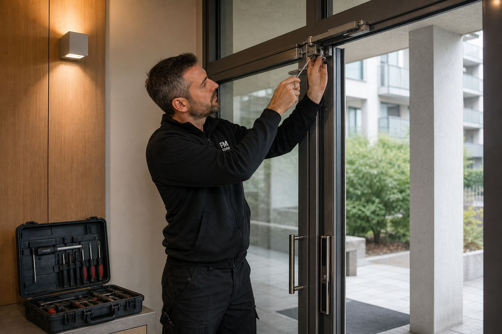
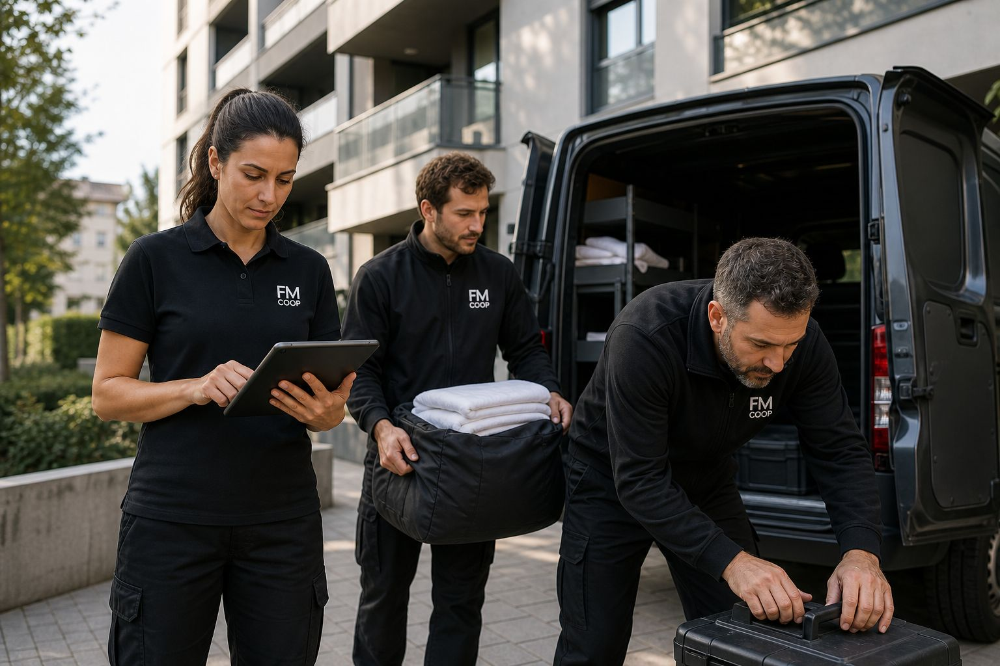
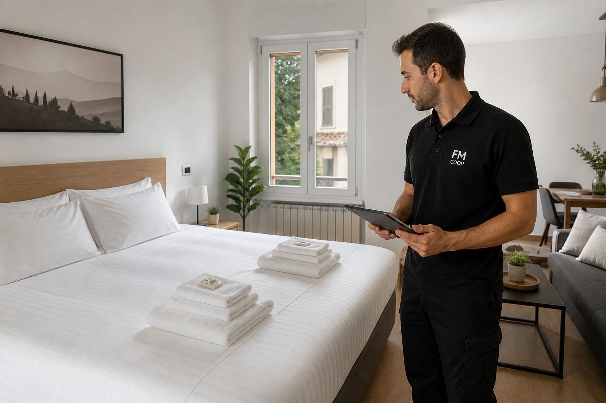
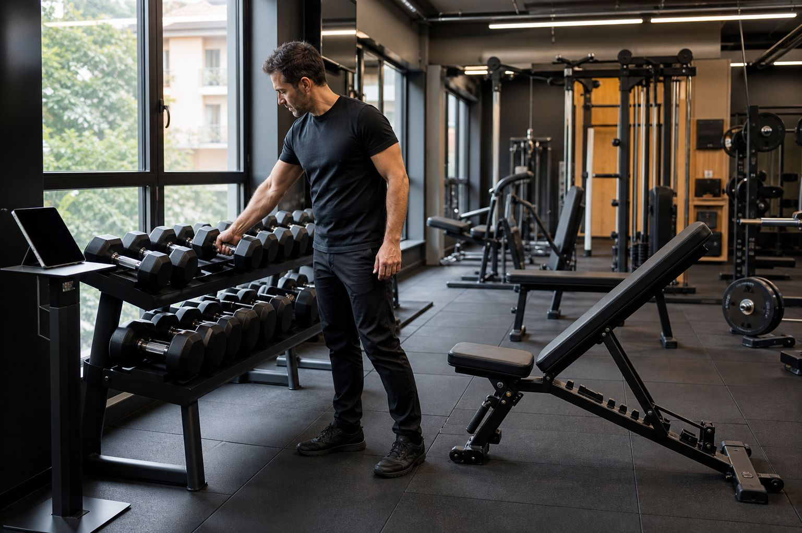
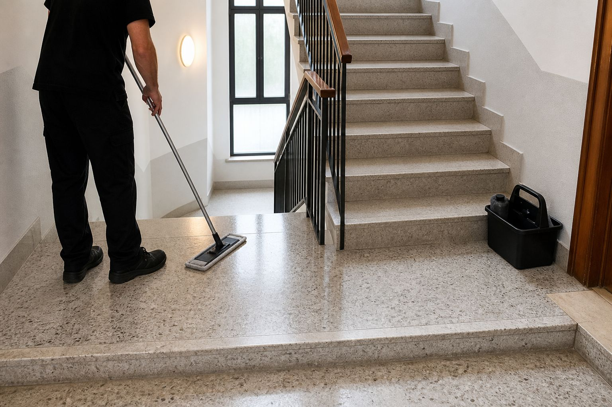
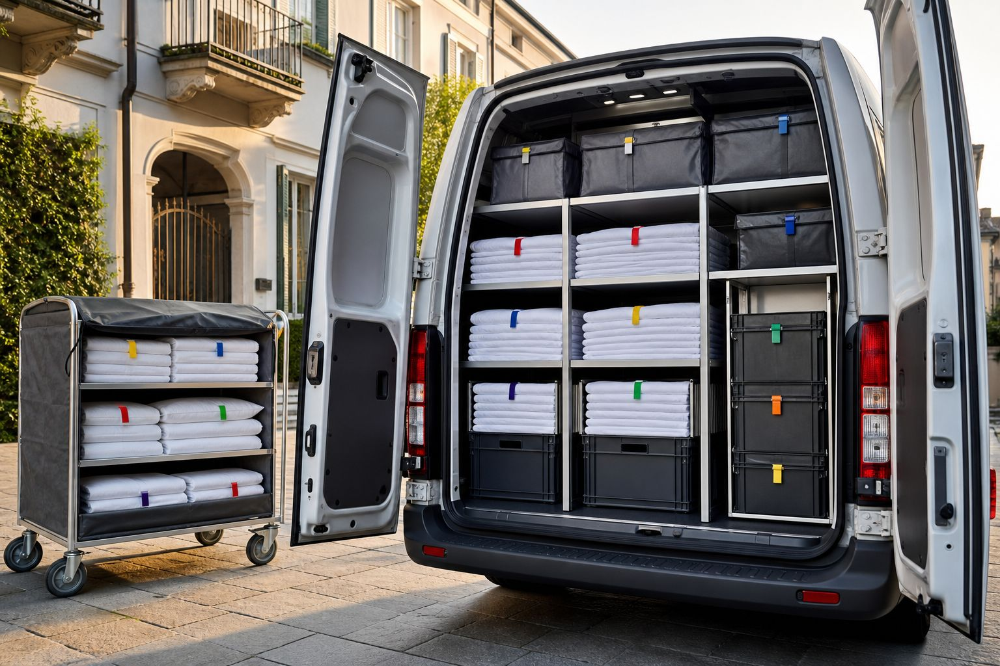
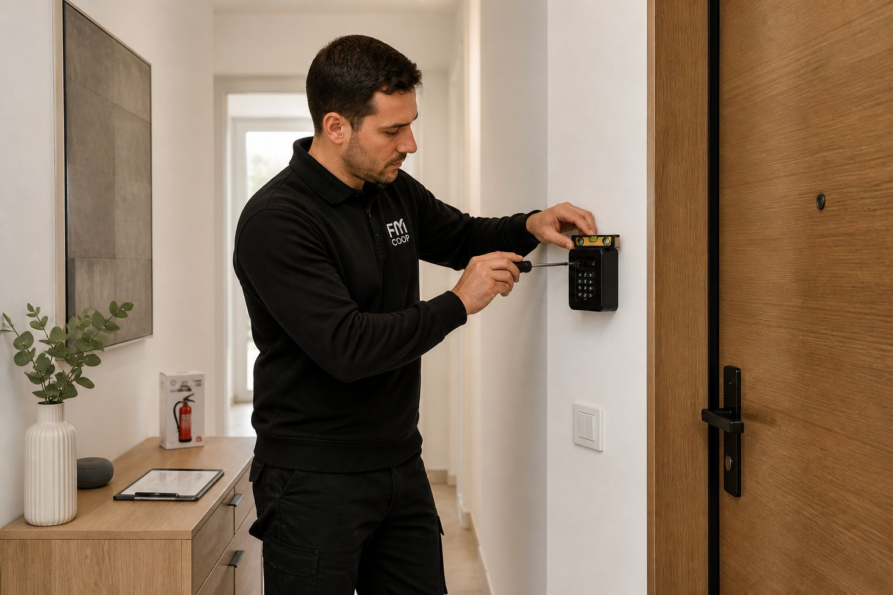
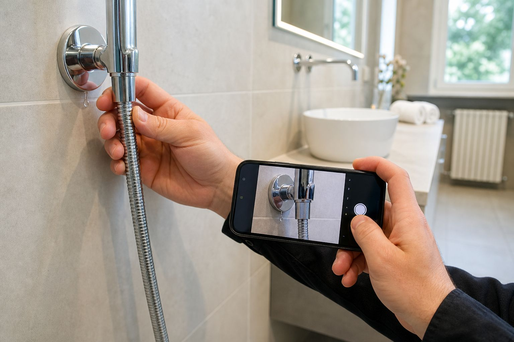

01
Risolviamo, non segnaliamo
Un tubo che perde, un doccino staccato, una maniglia che cede, un aspiratore fermo: li sistemiamo mentre siamo lì. Tu non devi cercare un idraulico e aspettare tre giorni.
Non siamo un'impresa di pulizie: siamo il reparto operativo dei tuoi spazi. Cambi tra un ospite e l'altro, biancheria, piccole manutenzioni, allestimenti e imprevisti risolti — con un unico referente e disponibilità 7 giorni su 7. A Bergamo, Brescia, Milano, Lago di Garda e Val Seriana.
Il tuo reparto operativo, senza doverlo assumere. Una cooperativa con squadre organizzate, non un fornitore che cambia persone ogni settimana.
Chi gestisce spazi finisce con quattro fornitori diversi: l'impresa di pulizie, la lavanderia, l'idraulico, il tuttofare. Quattro numeri, quattro fatture, e quando qualcosa non va nessuno se ne prende la responsabilità. Noi siamo l'alternativa: uno solo.

Non gestisci più quattro fornitori.
Ne hai uno solo.
Qualunque sia il tuo spazio, ti seguiamo dall'inizio alla fine: non solo la pulizia, ma tutto ciò che serve perché sia pronto e funzionante.

01Cambi tra un ospite e l'altro, biancheria fornita e trasportata, consumabili, controllo con foto, piccole manutenzioni e allestimento di nuovi appartamenti.
Scopri di più
02Interventi in fascia non operativa, anche notturni, per non fermare la struttura. Più manutenzioni e riparazione degli attrezzi.
Scopri di più 03
03
Passaggi negli orari che non disturbano il lavoro, consumabili sempre riforniti e piccoli interventi risolti sul posto.
Scopri di più
04Scale, androni e spazi comuni curati con passaggi programmati, piccole manutenzioni e segnalazioni all'amministratore.
Scopri di piùLa pulizia è solo il punto di partenza. Il valore è in tutto ciò che ti togliamo dalle mani.

Un tubo che perde, un doccino staccato, una maniglia che cede, un aspiratore fermo: li sistemiamo mentre siamo lì. Tu non devi cercare un idraulico e aspettare tre giorni.

Non solo la cambiamo: la forniamo, la facciamo lavare e la portiamo dove serve, anche fuori Bergamo. Tu non gestisci scorte, lavanderie o consegne.

Montaggio di key box ed estintori, installazione di lavelli e allacci, misure e sistemazione degli arredi: prepariamo l'immobile perché sia pronto a ricevere.

Ogni passaggio finisce con un controllo. Se troviamo un danno, un guasto o qualcosa che non torna, ti arriva la segnalazione con la foto — prima che se ne accorga l'ospite.
Un ospite che esce prima, un check-in anticipato, una richiesta arrivata alle nove del mattino per le tredici: riorganizziamo il giro e lo copriamo.
Pulizie, biancheria, manutenzioni, esterni: un solo interlocutore, un solo numero, una sola fattura. Siamo una cooperativa con squadre organizzate, non singoli che vanno e vengono.
Un metodo semplice e ripetibile: dal primo sopralluogo al controllo con foto, sempre con lo stesso referente.
Vediamo gli spazi, capiamo esigenze e tempi, e definiamo insieme cosa serve.
Persone fisse e organizzate che conoscono i tuoi spazi — non cambiano ogni settimana.
Ogni intervento si chiude con una verifica. Se qualcosa non torna, ti arriva la foto subito.
Pulizie, biancheria, manutenzioni: un numero, una fattura, una responsabilità.
Siamo vicini agli immobili che serviamo: tempi di intervento rapidi su tutta l'area, anche quando la richiesta arriva in giornata.
Bergamo, Brescia, Milano, Lago di Garda e Val Seriana, con i comuni vicini (Vertova, Albino, Gazzaniga, Seriate, Mapello…). Siamo vicini agli immobili che seguiamo, così i tempi di intervento restano rapidi anche quando la richiesta arriva in giornata.
Molto di più: cambi tra un ospite e l'altro, biancheria fornita e trasportata, piccole manutenzioni risolte sul posto, allestimento di nuovi appartamenti e gestione degli imprevisti. Un unico referente per tutto, invece di quattro fornitori diversi.
Ci organizziamo anche per le richieste dell'ultimo minuto: un check-out anticipato, un check-in spostato, una richiesta arrivata la mattina per il pomeriggio. Disponibilità 7 giorni su 7.
Sì, è una delle nostre specialità: cambio biancheria, riassetto tra un ospite e l'altro, consumabili, controllo finale con foto e segnalazione di eventuali guasti prima che se ne accorga l'ospite.
È gratuito e su misura. Dopo un breve sopralluogo definiamo insieme cosa serve e con quale frequenza, e ti proponiamo una soluzione chiara, senza sorprese.
Raccontaci di cosa hai bisogno: ti rispondiamo con un preventivo gratuito e su misura.
Richiedi un preventivo Scrivici su WhatsApp